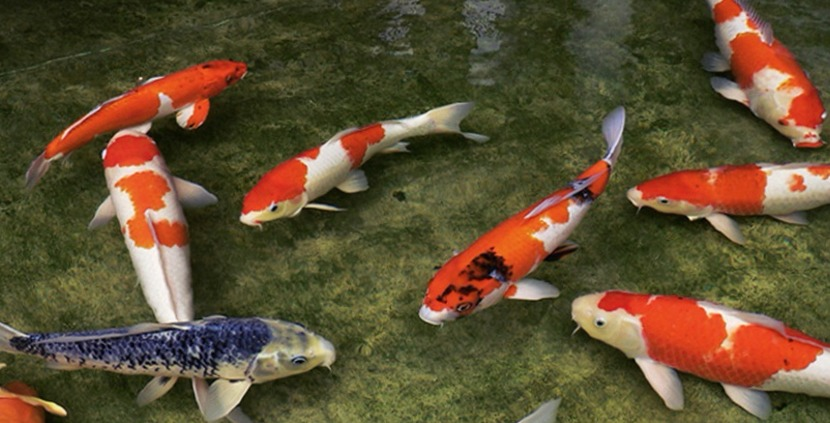
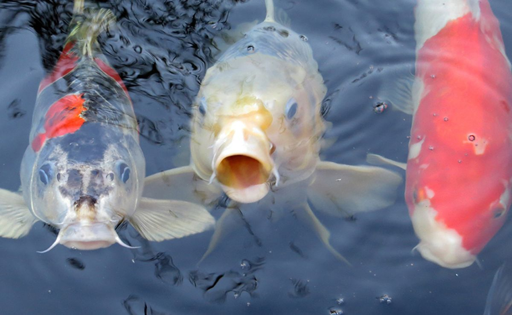
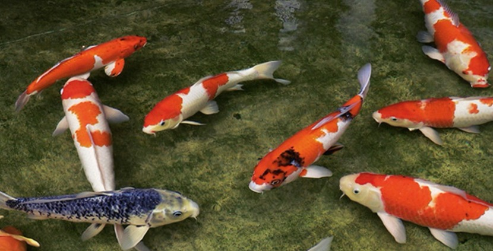
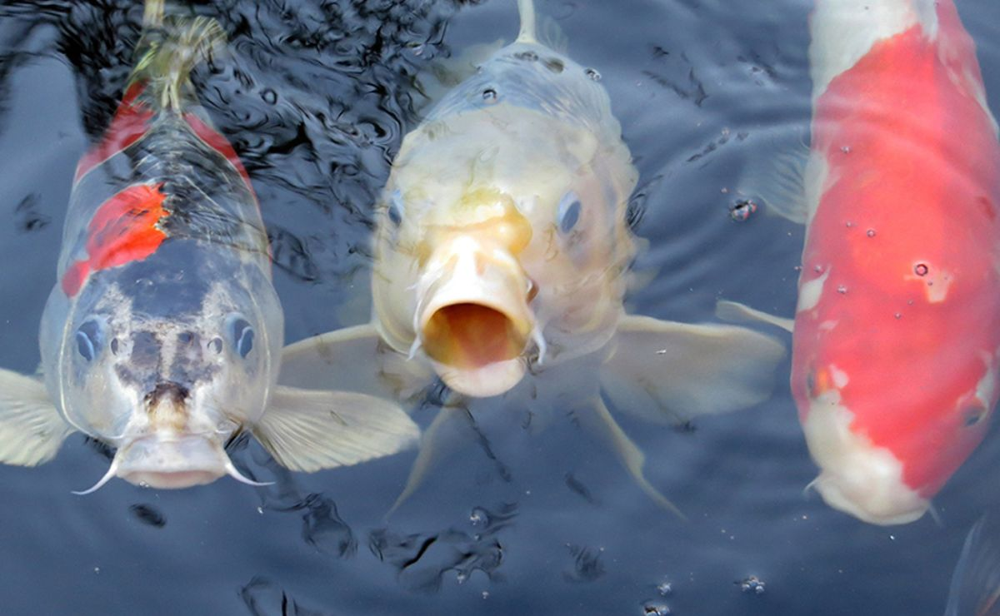

Salamandra gigante
Caracteristicas
La salamandra gigante china es una especie de anfibio urodelo de la familia Cryptobranchidae. Puede llegar a medir unos casi increíbles 1,8 metros de longitud, pudiendo llegar a pesar mas de 60 kg, posicionando a esta especie como el anfibio más grande del mundo. En cuanto a sus crias, suelen poner entre 400 y 500 huevos. Posee una cabeza proporcionalmente grande, ojos pequeños y una piel de tonalidades oscuras y arrugada.
Habitat
Viven en las corrientes frias de aguas montañosas, rios, arroyos y riachuelos de las zonas boscosas a lo largo de China.
Dieta
Insectos, peces y demas anfibios
Pez Koi
 



Caracteristicas
Se denomina comúnmente carpas koi, peces koi, nishikigoi o simplemente koi al conjunto informal que componen todas las coloridas variedades domésticas de carpas comunes. Su promedio de vida ronda entre los 25 y 35 años. Los koi pueden llegar a medir 1,2 m de largo y hasta 40-50 Kg de peso en estado adulto, aunque por lo general suele medir de 60-90 cm, y su peso ronda los 10 Kg. Los peces koi pueden tener una variedad de colores muy elevada, realizando patrones en las escamas muy bonitos. Podemos ver carpas blancas, rojas, negras, doradas, verdes, naranjas, etc.
Habitat
Este tipo de carpas son originarias de Asia, estando presentes en zonas que abarcan desde el mar Caspio al mar de Aral.
Dieta
El koi es omnívoro, por lo tanto hay un abanico muy amplio para ofrecerle una dieta equilibrada.